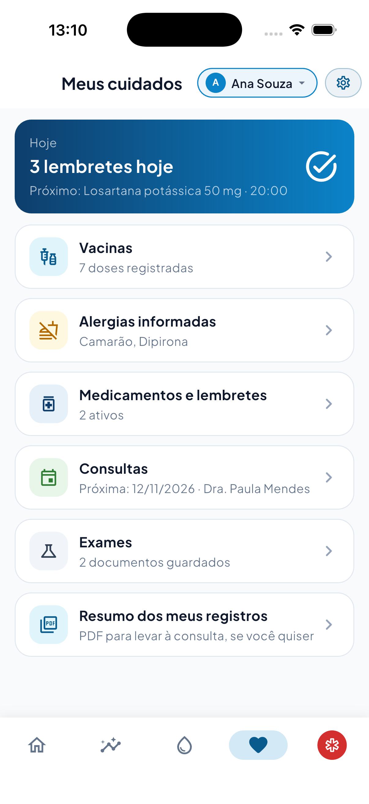
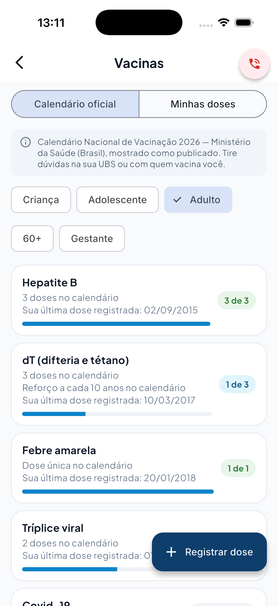
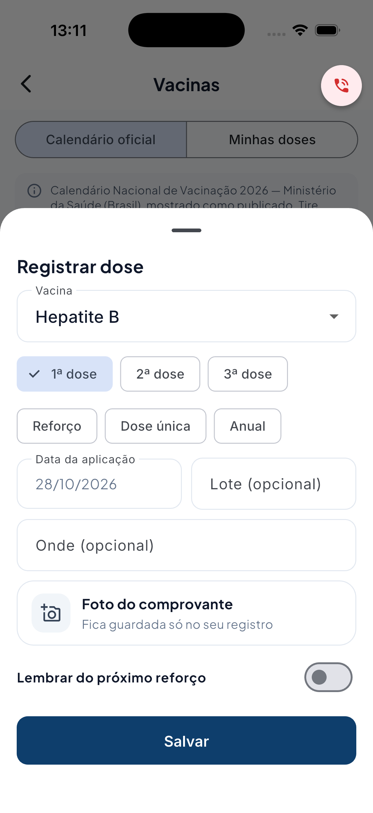
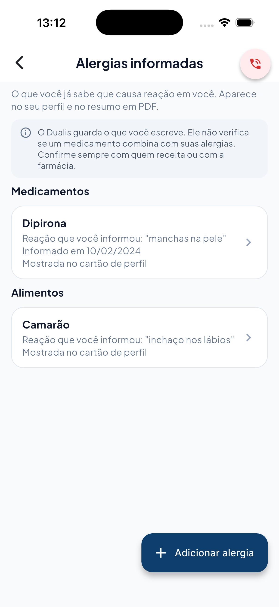
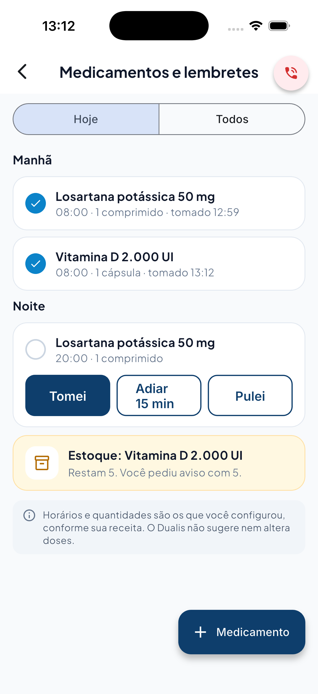
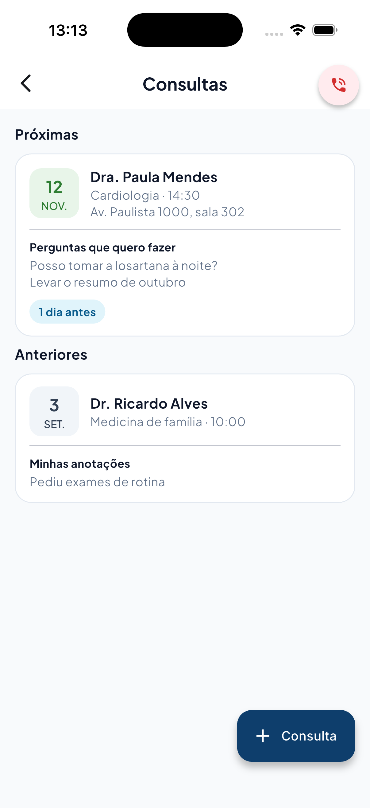
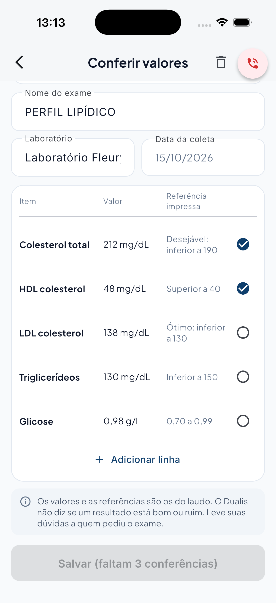
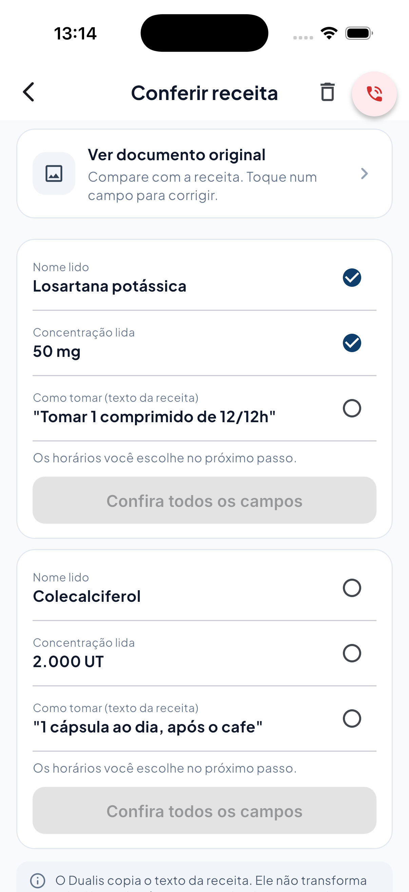
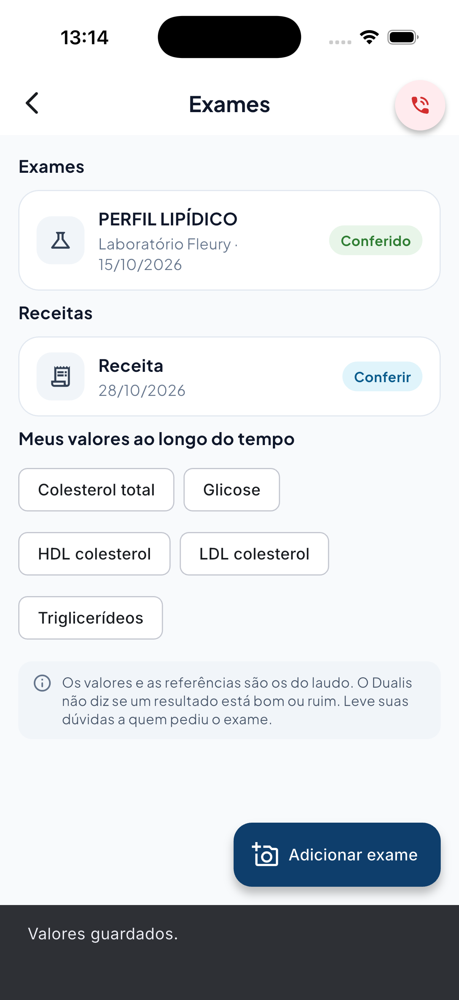
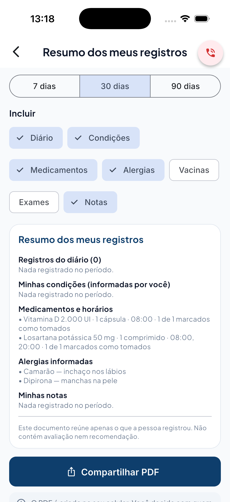

Central Meus cuidados

Vacinas: calendário oficial

Registrar dose

Alergias informadas

Lembretes de hoje + estoque

Consultas

Exame lido: conferir linha a linha

Receita lida: conferir campos

Exame conferido + valores por item

Resumo dos meus registros (PDF)